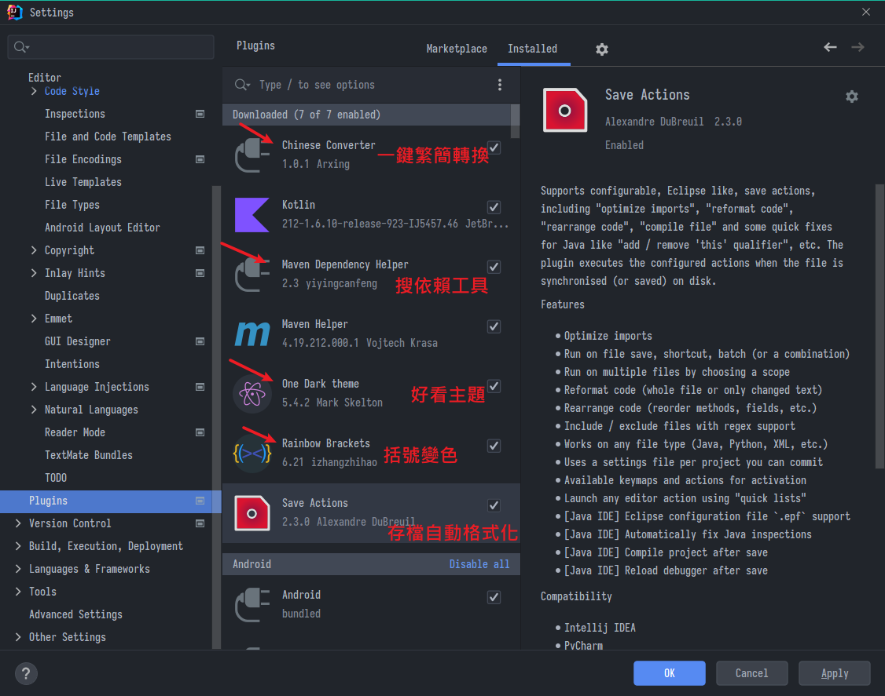
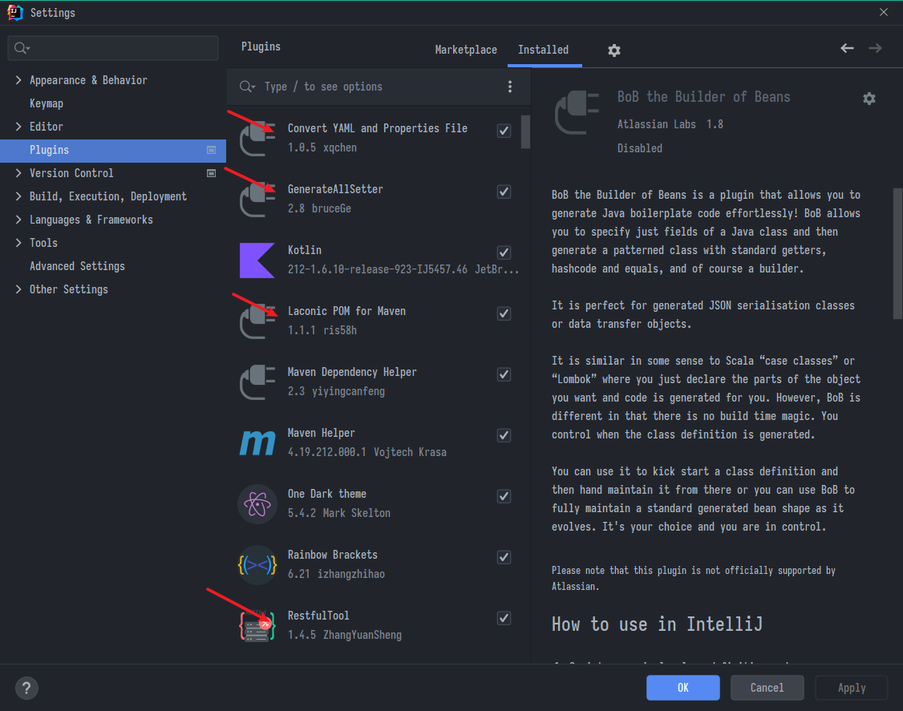
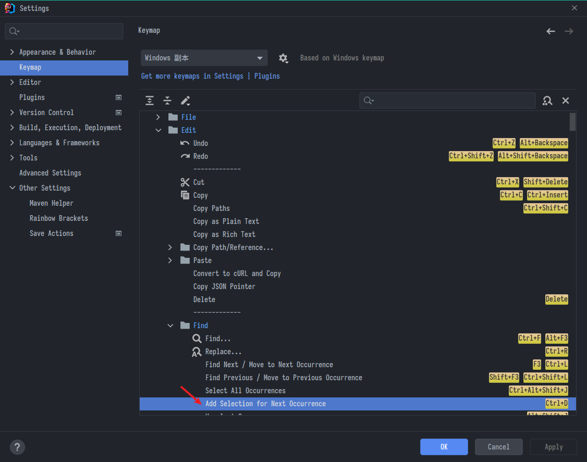
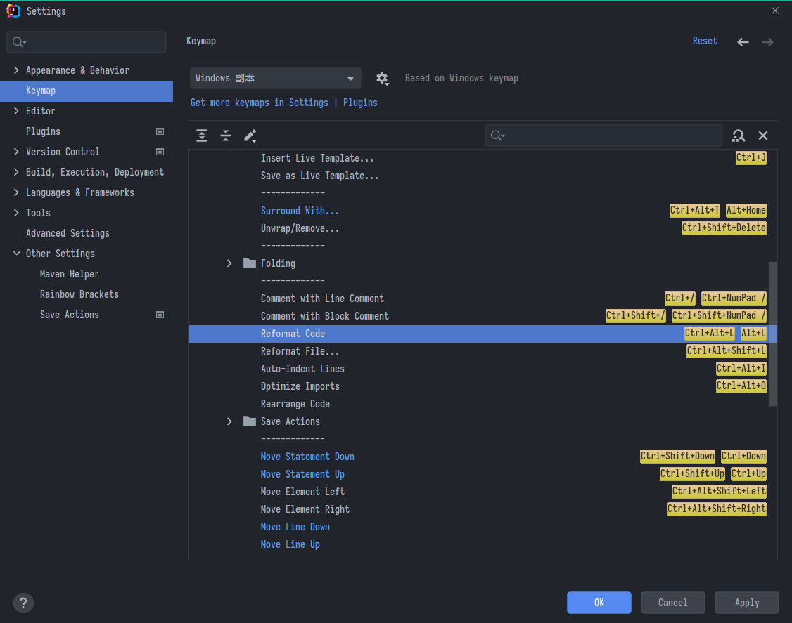
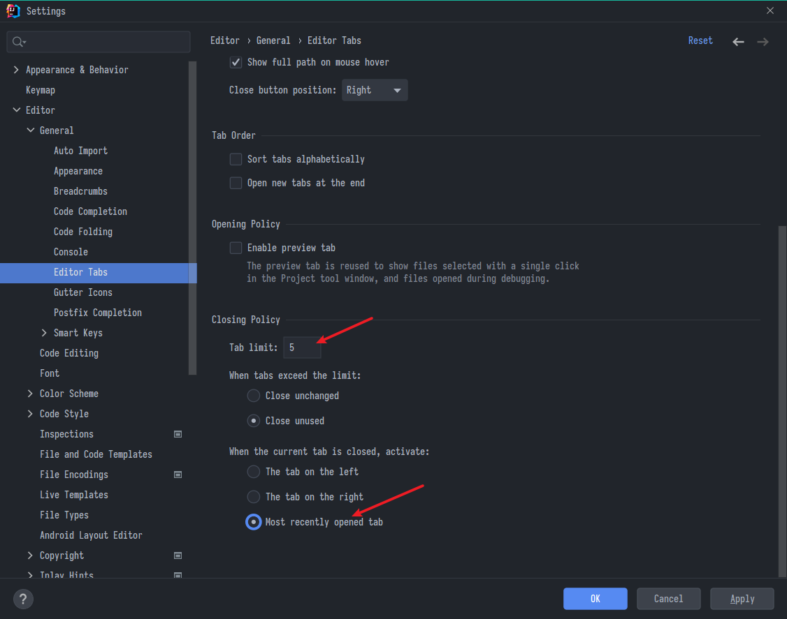
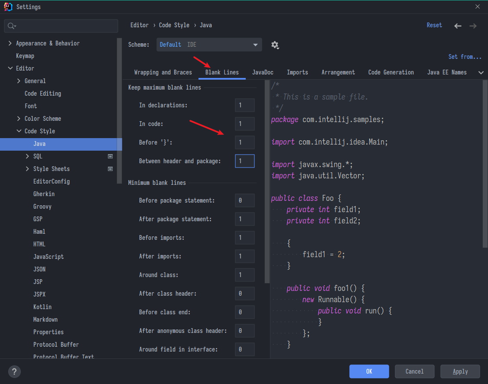
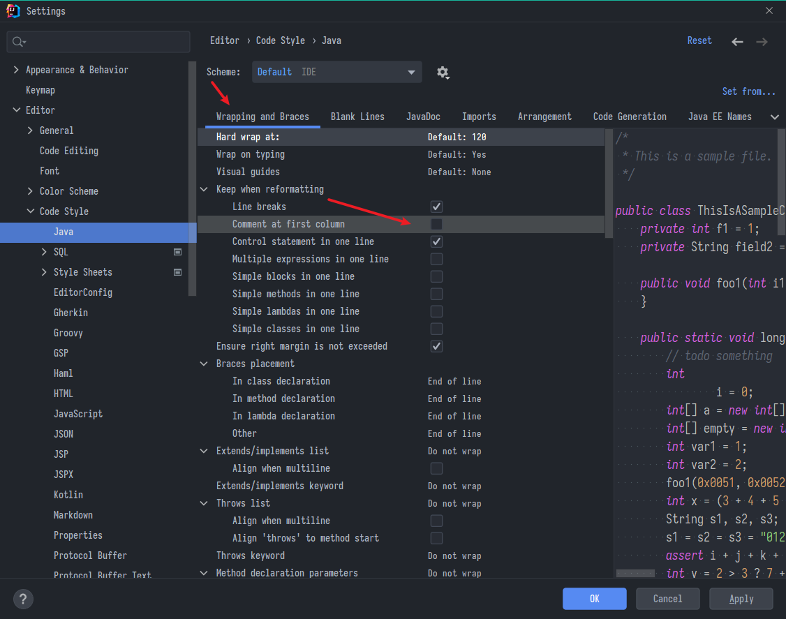
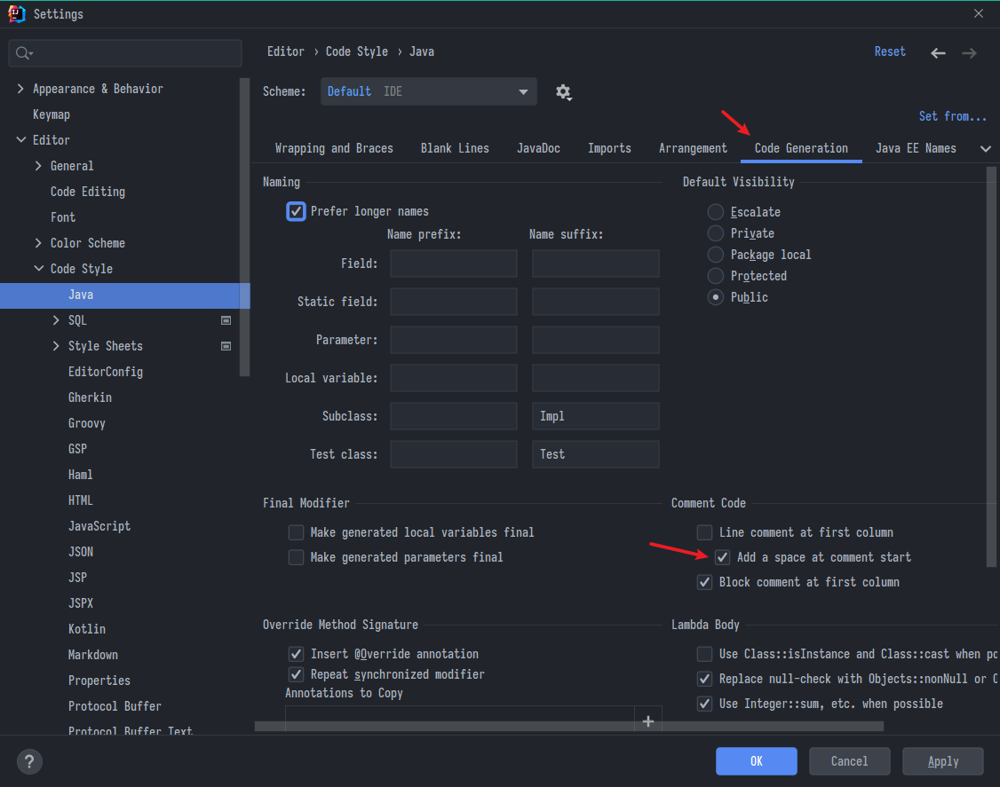

IntelliJ IDEA設定與常用快捷鍵
IntelliJ IDEA設定與常用快捷鍵
IDEA基礎設定
-
安裝的根目錄，舉例…\IntelliJ IDEA 2021.2.3\bin\idea64.exe.vmoptions
- 編輯這個idea64.exe.vmoptions，改成-Xmx1024m -Xms2048m
-
ctrl+alt+s開啟設定 -> plugins插件 -> 搜尋chinese -> 安裝重啟 -> 中文化
-
plugins插件 -> 搜尋save actions-> 安裝重啟 -> 存檔時自動格式化
-
外觀-使用自定義字體打勾-Sarasa mono…，大小改14
-
更紗黑體Sarasa-Gothic
- https://github.com/be5invis/Sarasa-Gothic
- 特性:融合Iosevka(程式碼常用的等寬字型)跟Source Han Sans(思源黑)，有等距、繁簡中日韓不缺字，簡直完美
-
編譯器-字體-一樣改，大小我是設18、行高1.1
插件


常用快捷鍵
視窗
- Close All Tabs : alt + w
- Terminal : ctrl + alt + 0
選取
- ctrl + E 最近使用的檔案列表
- 选中下一个相同内容的快捷键(vs code中的Ctrl+D)：Alt + J
- 選中匹配的大括號ctrl+] 或 ctrl+[
- 快速移動到警告處(黃標或紅標)
以「行」為單位
- 複製 : ctrl + D
- 移動 : ctrl + shift + ↑/↓
- 註解 : ctrl + /
- 刪除 : ctrl+x(其實是剪下)
以「區塊」為單位
- 擴增選取 : ctrl + W
- 遞減選取 : ctrl + shift + W
- 更改大小寫 : ctrl + shift + U
自動功能 :
- 自動補全 : alt + enter
- 自動產生 : alt + Ins
- 自動排版 : ctrl + alt + L
其他
- 顯示形參列表:ctrl+p
- shift + shift 全域搜索
- 查找當前文件結構(有哪些方法、屬性):ctrl+F12
- ctrl+alt+shift+n 找方法
- Ctrl+H查看當前接口或抽象的子類
- 全部折疊ctrl + shift +
-減號
個人設定
快捷鍵


新專案設定
- 新專案設定，有時候覺得奇怪不是設定過怎又跑掉，原因是在這

- 比較重要的是這個properties編碼跟save Actions插件的自動格式化、導包等等設定

其他舒適設定
- 限制開啟視窗數量:File->Settings->Editor->General->Editor Tab->Tab limit

- 過濾顯示檔案
*.iml;*.idea;*.sh;*.classpath;*.project;*.settings;target;*.mvn;*.cmd;mvnw

代碼樣式
Java



上次修改於 2021-11-18